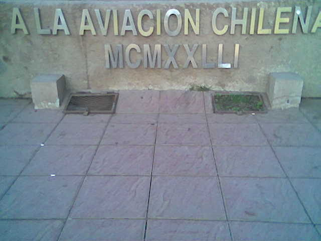
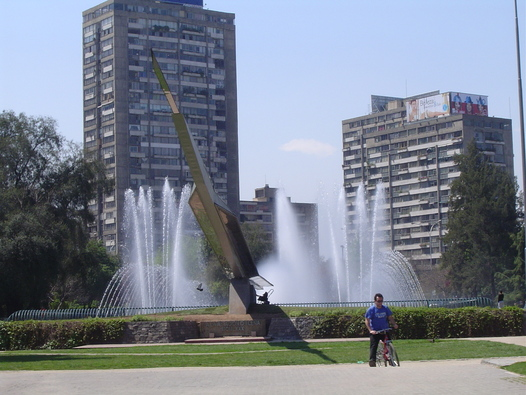

Error Monumental (o cuando MCMXXLLI = 1980)
Pueden decirme ¿cuál sería el número romano que intentaron colocar al pie de este monumento?:

La foto fue tomada por Hernán Cabrera, compañero dcciano 80-90, el 13 de diciembre de 2007.
Se trata del Monumento a la Aviación en providencia, sí este mismo, que los santiaguinos conocemos bastante bien:

Yo digo que trataron de escribir 1981.
ACTUALIZACION
Me informan:
“El monumento a LA AVIACION CHILENA diseñado por René Orellana y Beatriz Silva fue inagurado en 1980…” … “… prolongación del Parque Balmaceda, con el cual muchas veces es confundida. En este sector encontramos el monumento a la aviación erigido en 1980, por el entonces Comandante en jefe de la FACH, General Mathei, de donde obtuvo su nombre.”
Luego, por decreto, MCMXXLLI = 1980, ¡tomen!
OTRA ACTUALIZACION
Via roduar me entero que el 13 de diciembre “ya había publicado” (con otra foto) sobre esto en otro blog.
¿Mucha coincidencia?
En estos momentos estamos torturando a mi informante para que me diga si lo leyó primero en el blog de Rodrigo Duarte.